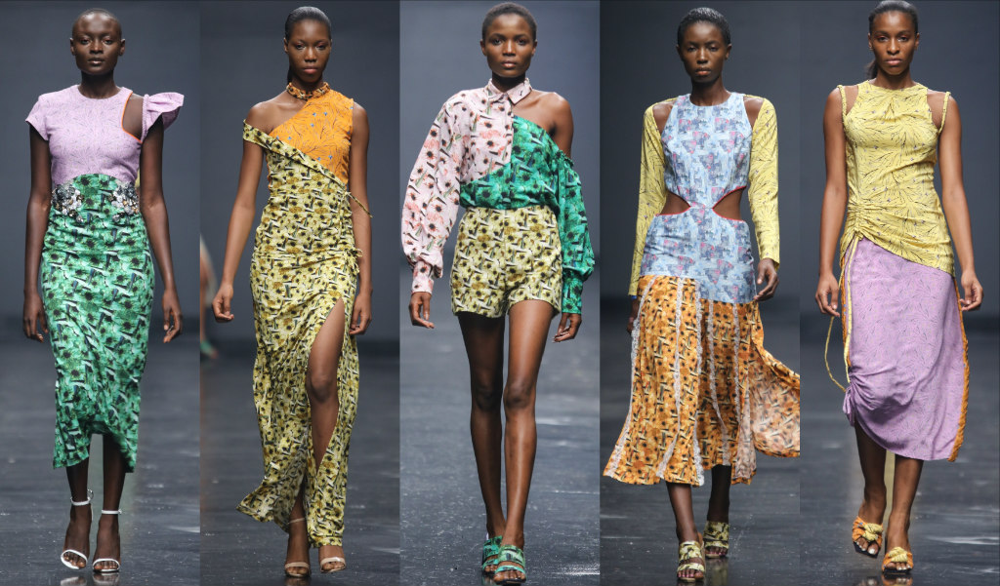
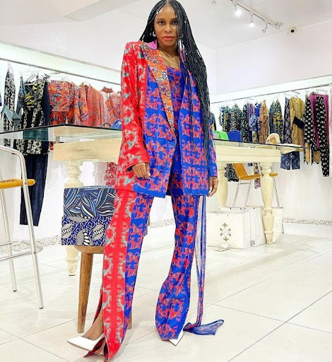

Lisa Folawiyo Studio
Biography
Nigerian fashion designer Lisa Folawiyo is celebrated for her colourful collections that fuse traditional West African fabrics with modern tailoring and beaded embellishments.
Though trained as a lawyer and having no knowledge in fashion, Lisa Folawiyo chose her passion and decided to pursue a career in fashion.
"In 2004, there arose an unquenchable desire to express myself through fashion design and have a loud voice heard in fashion the world over."
With just ₦20,000 (approx £4,750) as an investment, Lisa bought twelve yards of fabric and made her first pieces with her seamstress mother in her home.
Since starting her label in 2005, Folawiyo has spearheaded the movement of Nigerian designers achieving international recognition for their work.
She has a knack for elevating traditional African prints above the status quo, making them relevant for a global audience.
Her collections are exclusively crafted from Ankara textiles - vibrant wax-resistant dyed fabrics characteristic of West Africa. She regularly collaborates with local artisans to showcase Nigerian fabrics, production processes and techniques such as hand sown embellishments, weaving (Aṣọ òkè) and Àdìrẹ (indigo-dyed cotton cloths decorated using a resist-dying technique to create striking patterns in blue and white).
"Our mothers, grandmothers and probably great-grandmothers have worn this fabric."
She has show rooms in both Nigeria and New York and her collections are stocked in the UK, the US, South Africa and Nigeria itself.
Achievements
- Won the 2012 African Fashion Awards
- Featured in the Busiess Of Fashion 500 (definitive professional index of the people shaping the fashion industry)
- Her clothes have appeared in Vogue, The New York Times, Harper’s Bazaar and Elle
- Featured in the Victoria and Albert Museum 2022 Africa Fashion Exhibit